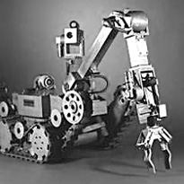
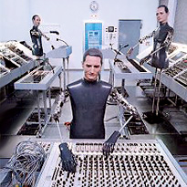

1969

"Hughes Aircraft" entwickelt die "Mobots". Diese Roboter werden durch Radio und Kamera-Systeme ferngesteuert, entweder durch
Menschen oder Computer. Sie sind dazu bestimmt in extremen Situationen zu arbeiten. Z.B. bei chemischen Testversuchen, in radioaktiven Umgebungen, etc.
Zwischen 1968 und 1970 formiert sich die deutsche Band "Kraftwerk", die mit eigenen Robotern auf der Bühne auftritt.
"Die Roboter"(1978): Wir laden unsere Batterie/Jetzt sind wir voller Energie/Wir sind die Roboter/Wir funktionieren Automatik/Jetzt wollen wir tanzen Mechanik/Wir sind die Roboter/Wir sind auf Alles programmiert/Und was du willst wird ausgeführt...